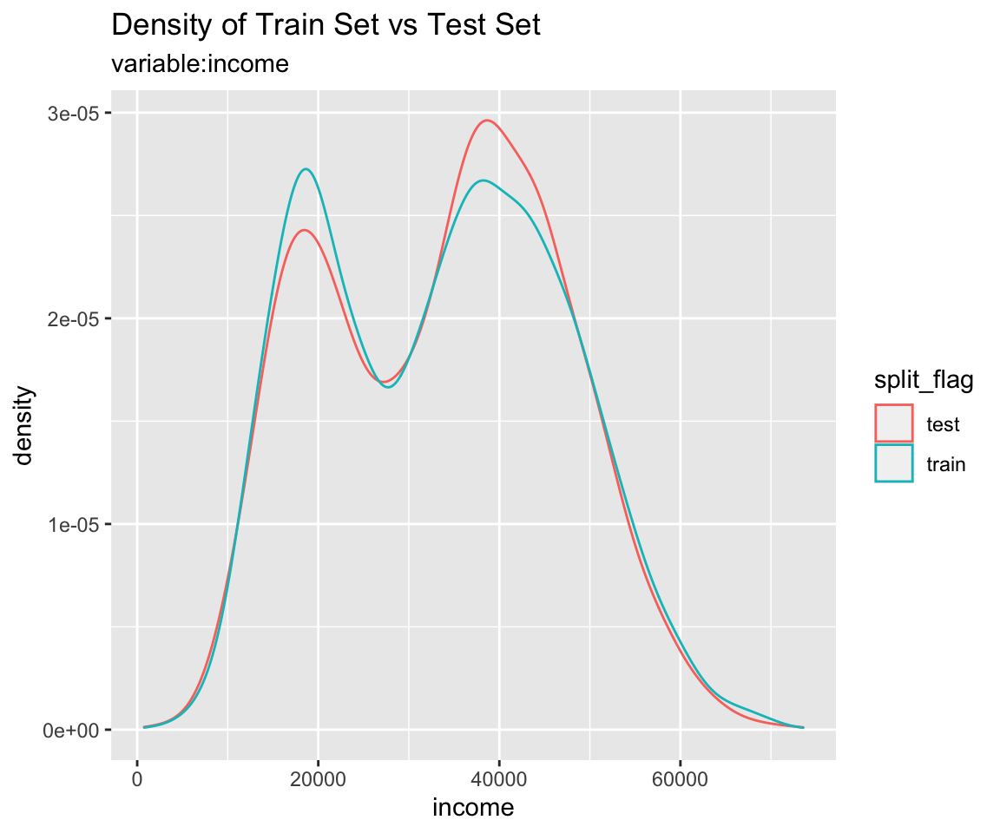
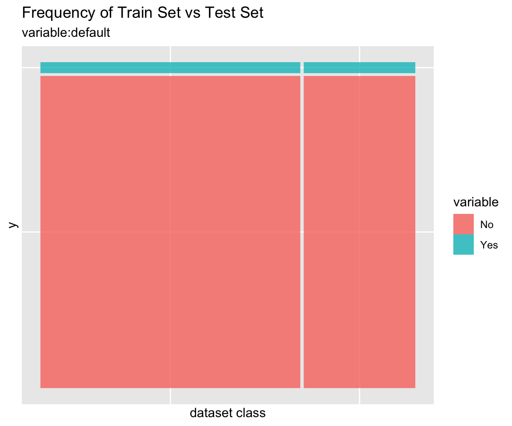
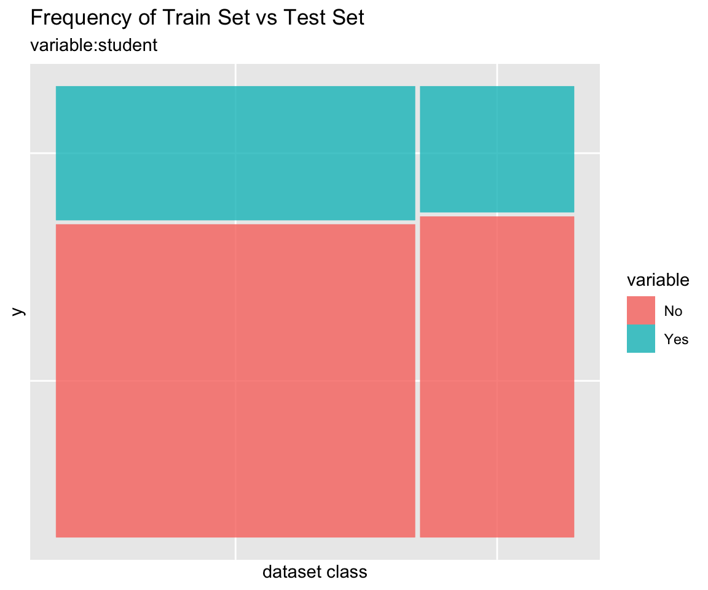
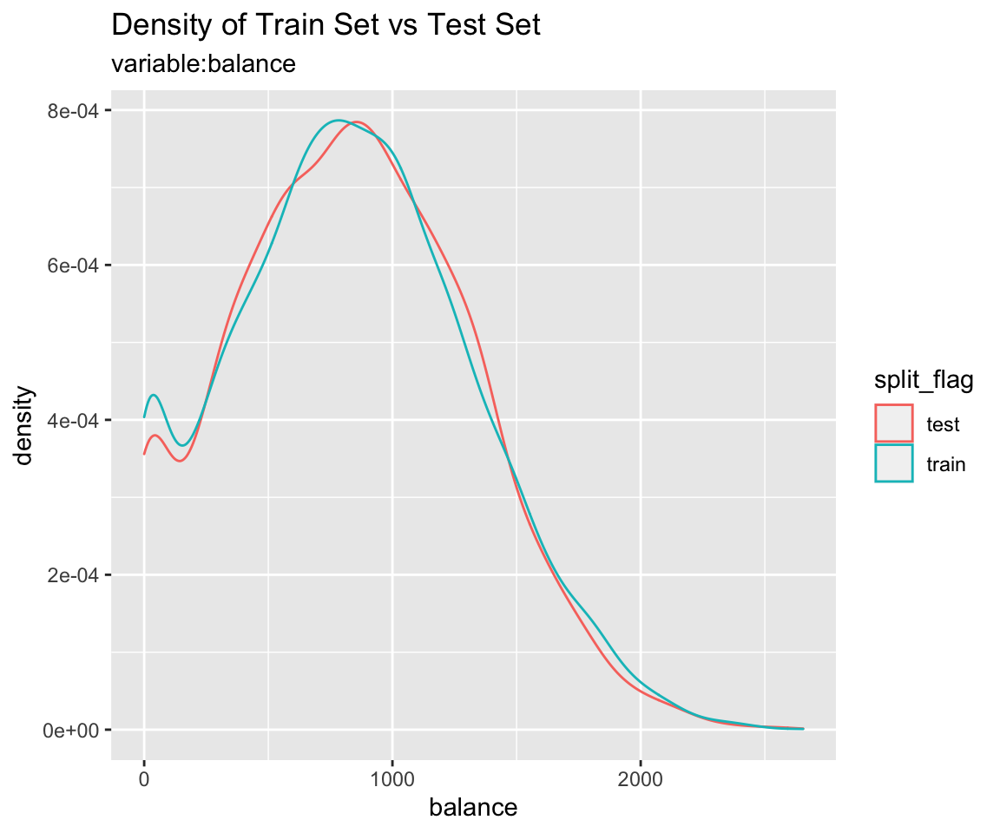

To develop a classification model, the original data must be divided into train data set and test data set. You should do the following:
The alookr package makes these steps fast and easy:
Default of ISLR package is a simulated data set containing information on ten thousand customers. The aim here is to predict which customers will default on their credit card debt.
A data frame with 10000 observations on the following 4 variables.:
default : factor. A factor with levels No and Yes indicating whether the customer defaulted on their debtstudent: factor. A factor with levels No and Yes indicating whether the customer is a studentbalance: numeric. The average balance that the customer has remaining on their credit card after making their monthly paymentincome : numeric. Income of customer# Credit Card Default Data
head(ISLR::Default)
default student balance income
1 No No 729.5265 44361.625
2 No Yes 817.1804 12106.135
3 No No 1073.5492 31767.139
4 No No 529.2506 35704.494
5 No No 785.6559 38463.496
6 No Yes 919.5885 7491.559
# structure of dataset
str(ISLR::Default)
'data.frame': 10000 obs. of 4 variables:
$ default: Factor w/ 2 levels "No","Yes": 1 1 1 1 1 1 1 1 1 1 ...
$ student: Factor w/ 2 levels "No","Yes": 1 2 1 1 1 2 1 2 1 1 ...
$ balance: num 730 817 1074 529 786 ...
$ income : num 44362 12106 31767 35704 38463 ...
# summary of dataset
summary(ISLR::Default)
default student balance income
No :9667 No :7056 Min. : 0.0 Min. : 772
Yes: 333 Yes:2944 1st Qu.: 481.7 1st Qu.:21340
Median : 823.6 Median :34553
Mean : 835.4 Mean :33517
3rd Qu.:1166.3 3rd Qu.:43808
Max. :2654.3 Max. :73554 split_by() splits the data.frame or tbl_df into a training set and a test set.
split_by()
The split_df class is created, which contains the split information and criteria to separate the training and the test set.
library(alookr) library(dplyr) # Generate data for the example sb <- ISLR::Default %>% split_by(default, seed = 6534) sb # A tibble: 10,000 x 5 # Groups: split_flag [2] default student balance income split_flag <fct> <fct> <dbl> <dbl> <chr> 1 No No 730. 44362. train 2 No Yes 817. 12106. train 3 No No 1074. 31767. train 4 No No 529. 35704. train 5 No No 786. 38463. test 6 No Yes 920. 7492. train # … with 9,994 more rows
The attributes of the split_df class are as follows.:
attr_names <- names(attributes(sb))
attr_names
[1] "names" "row.names" "groups" "class"
[5] "split_seed" "target" "binary" "minority"
[9] "majority" "minority_rate" "majority_rate"
sb_attr <- attributes(sb)
# The third property, row.names, is excluded from the output because its length is very long.
sb_attr[!attr_names %in% "row.names"]
$names
[1] "default" "student" "balance" "income" "split_flag"
$groups
# A tibble: 2 x 2
split_flag .rows
* <chr> <list<int>>
1 test [3,000]
2 train [7,000]
$class
[1] "split_df" "grouped_df" "tbl_df" "tbl" "data.frame"
$split_seed
[1] 6534
$target
default
"default"
$binary
[1] TRUE
$minority
[1] "Yes"
$majority
[1] "No"
$minority_rate
Yes
0.0333
$majority_rate
No
0.9667 summary() summarizes the information of two datasets splitted by split_by().
summary(sb)
** Split train/test set information **
+ random seed : 6534
+ split data
- train set count : 7000
- test set count : 3000
+ target variable : default
- minority class : Yes (0.033300)
- majority class : No (0.966700)Train data and test data should be similar. If the two datasets are not similar, the performance of the predictive model may be reduced.
alookr provides a function to compare the similarity between train dataset and test dataset.
If the two data sets are not similar, the train dataset and test dataset should be splitted again from the original data.
compare_target_category()
Compare the statistics of the categorical variables of the train set and test set included in the “split_df” class.
sb %>% compare_target_category() # A tibble: 4 x 5 variable level train test abs_diff <chr> <fct> <dbl> <dbl> <dbl> 1 default No 96.7 96.7 0.00476 2 default Yes 3.33 3.33 0.00476 3 student No 70.0 71.8 1.77 4 student Yes 30.0 28.2 1.77 # compare variables that are character data types. sb %>% compare_target_category(add_character = TRUE) # A tibble: 4 x 5 variable level train test abs_diff <chr> <fct> <dbl> <dbl> <dbl> 1 default No 96.7 96.7 0.00476 2 default Yes 3.33 3.33 0.00476 3 student No 70.0 71.8 1.77 4 student Yes 30.0 28.2 1.77 # display marginal sb %>% compare_target_category(margin = TRUE) # A tibble: 6 x 5 variable level train test abs_diff <chr> <fct> <dbl> <dbl> <dbl> 1 default No 96.7 96.7 0.00476 2 default Yes 3.33 3.33 0.00476 3 default <Total> 100 100 0.00952 4 student No 70.0 71.8 1.77 5 student Yes 30.0 28.2 1.77 6 student <Total> 100 100 3.54 # student variable only sb %>% compare_target_category(student) # A tibble: 2 x 5 variable level train test abs_diff <chr> <fct> <dbl> <dbl> <dbl> 1 student No 70.0 71.8 1.77 2 student Yes 30.0 28.2 1.77 sb %>% compare_target_category(student, margin = TRUE) # A tibble: 3 x 5 variable level train test abs_diff <chr> <fct> <dbl> <dbl> <dbl> 1 student No 70.0 71.8 1.77 2 student Yes 30.0 28.2 1.77 3 student <Total> 100 100 3.54
compare_target_category() returns tbl_df, where the variables have the following.:
compare_target_numeric()
Compare the statistics of the numerical variables of the train set and test set included in the “split_df” class.
sb %>% compare_target_numeric() # A tibble: 2 x 7 variable train_mean test_mean train_sd test_sd train_z test_z <chr> <dbl> <dbl> <dbl> <dbl> <dbl> <dbl> 1 balance 836. 834. 487. 477. 1.72 1.75 2 income 33446. 33684. 13437. 13101. 2.49 2.57 # balance variable only sb %>% compare_target_numeric(balance) # A tibble: 1 x 7 variable train_mean test_mean train_sd test_sd train_z test_z <chr> <dbl> <dbl> <dbl> <dbl> <dbl> <dbl> 1 balance 836. 834. 487. 477. 1.72 1.75
compare_target_numeric() returns tbl_df, where the variables have the following.:
compare_plot()
Plot compare information of the train set and test set included in the “split_df” class.
# income variable only sb %>% compare_plot("income")

# all varibales sb %>% compare_plot()

compare_diag()
Diagnosis of similarity between datasets splitted by train set and set included in the “split_df” class.
defaults <- ISLR::Default defaults$id <- seq(NROW(defaults)) set.seed(1) defaults[sample(seq(NROW(defaults)), 3), "student"] <- NA set.seed(2) defaults[sample(seq(NROW(defaults)), 10), "balance"] <- NA sb_2 <- defaults %>% split_by(default) sb_2 %>% compare_diag() * Detected diagnose missing value - student - balance - balance * Detected diagnose missing levels - student $missing_value # A tibble: 3 x 4 variables train_misscount train_missrate test_missrate <chr> <int> <dbl> <dbl> 1 student 3 0.0429 NA 2 balance 8 0.114 NA 3 balance 2 NA 0.0667 $single_value # A tibble: 0 x 3 # … with 3 variables: variables <chr>, train_uniq <lgl>, test_uniq <lgl> $uniq_rate # A tibble: 0 x 5 # … with 5 variables: variables <chr>, train_uniqcount <int>, # train_uniqrate <dbl>, test_uniqcount <int>, test_uniqrate <dbl> $missing_level # A tibble: 1 x 4 variables n_levels train_missing_nlevel test_missing_nlevel <chr> <int> <int> <int> 1 student 3 0 1 sb_2 %>% compare_diag(add_character = TRUE) * Detected diagnose missing value - student - balance - balance * Detected diagnose missing levels - student $missing_value # A tibble: 3 x 4 variables train_misscount train_missrate test_missrate <chr> <int> <dbl> <dbl> 1 student 3 0.0429 NA 2 balance 8 0.114 NA 3 balance 2 NA 0.0667 $single_value # A tibble: 0 x 3 # … with 3 variables: variables <chr>, train_uniq <lgl>, test_uniq <lgl> $uniq_rate # A tibble: 0 x 5 # … with 5 variables: variables <chr>, train_uniqcount <int>, # train_uniqrate <dbl>, test_uniqcount <int>, test_uniqrate <dbl> $missing_level # A tibble: 1 x 4 variables n_levels train_missing_nlevel test_missing_nlevel <chr> <int> <int> <int> 1 student 3 0 1 sb_2 %>% compare_diag(uniq_thres = 0.0005) * Detected diagnose missing value - student - balance - balance * Detected diagnose many unique value - default - student * Detected diagnose missing levels - student $missing_value # A tibble: 3 x 4 variables train_misscount train_missrate test_missrate <chr> <int> <dbl> <dbl> 1 student 3 0.0429 NA 2 balance 8 0.114 NA 3 balance 2 NA 0.0667 $single_value # A tibble: 0 x 3 # … with 3 variables: variables <chr>, train_uniq <lgl>, test_uniq <lgl> $uniq_rate # A tibble: 2 x 5 variables train_uniqcount train_uniqrate test_uniqcount test_uniqrate <chr> <int> <dbl> <int> <dbl> 1 default NA NA 2 0.000667 2 student NA NA 2 0.000667 $missing_level # A tibble: 1 x 4 variables n_levels train_missing_nlevel test_missing_nlevel <chr> <int> <int> <int> 1 student 3 0 1
If you compare the train set with the test set and find that the two datasets are similar, extract the data from the split_df object.
extract_set()
Extract train set or test set from split_df class object.
train <- sb %>% extract_set(set = "train") test <- sb %>% extract_set(set = "test") dim(train) [1] 7000 4 dim(test) [1] 3000 4
sampling_target()
In a target class, the ratio of the majority class to the minority class is not similar and the ratio of the minority class is very small, which is called the imbalanced class.
If target variable is an imbalanced class, the characteristics of the majority class are actively reflected in the model. This model implies an error in predicting the minority class as the majority class. So we have to make the train dataset a balanced class.
sampling_target() performs sampling on the train set of split_df to resolve the imbalanced class.
# under-sampling with random seed under <- sb %>% sampling_target(seed = 1234L) under %>% count(default) # A tibble: 2 x 2 default n <fct> <int> 1 No 233 2 Yes 233 # under-sampling with random seed, and minority class frequency is 40% under40 <- sb %>% sampling_target(seed = 1234L, perc = 40) under40 %>% count(default) # A tibble: 2 x 2 default n <fct> <int> 1 No 349 2 Yes 233 # over-sampling with random seed over <- sb %>% sampling_target(method = "ubOver", seed = 1234L) over %>% count(default) # A tibble: 2 x 2 default n <fct> <int> 1 No 6767 2 Yes 6767 # over-sampling with random seed, and k = 10 over10 <- sb %>% sampling_target(method = "ubOver", seed = 1234L, k = 10) over10 %>% count(default) # A tibble: 2 x 2 default n <fct> <int> 1 No 6767 2 Yes 2330 # SMOTE with random seed smote <- sb %>% sampling_target(method = "ubSMOTE", seed = 1234L) smote %>% count(default) # A tibble: 2 x 2 default n <fct> <int> 1 No 932 2 Yes 699 # SMOTE with random seed, and perc.under = 250 smote250 <- sb %>% sampling_target(method = "ubSMOTE", seed = 1234L, perc.under = 250) smote250 %>% count(default) # A tibble: 2 x 2 default n <fct> <int> 1 No 1165 2 Yes 699
The argument that specifies the sampling method in sampling_target () is method. “ubUnder” is under-sampling, and “ubOver” is over-sampling, “ubSMOTE” is SMOTE(Synthetic Minority Over-sampling TEchnique).